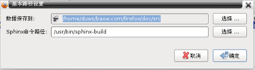

|
|
English 简体中文 |
通过项目管理才能充分使用Baow的各项功能。在开始之前，最好先好好看看 Sphinx 的文档。
在项目管理窗口当中，点击 路径 按钮，在弹出的窗口当中，首先输入基本的路径信息。 通过点击 选择 按钮可以直接选择路径。

说明如下:
- 数据保存到 :
- 所有数据都保存到这个目录下边。
- Sphinx 命令路径 :
Sphinx 的命令文件，Windows 当中一般是:
C:\Python27\Scripts\sphinx-build.exeLinux, BSD 等系统当中一般是:
/usr/bin/sphinx-build
输入完了基本路径信息，然后点击 新项目 按钮输入项目信息。
项目名称 和 Path ID 是必需的，默认的配置一般足够了。如果您不想生成网页文件，其他选项可以不用填写。如果想生成网页，其他的大多数选项只需要输入文字就可以，但有些特殊的设置需要按照Python的语法格式进行。具体的方法请先查阅一下 Sphinx 的文档。
最后，应该点击 应用 按钮，来选择项目配置。

 :
: